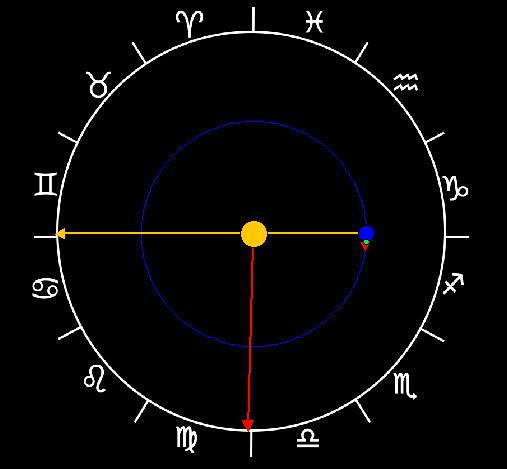

Sidereal vs. Solar Days
General Description
This simulation illustrates the difference between the sidereal and solar day. The planets of our solar system both orbit around Sun and rotate on their axis. These two rotations allow for multiple definitions of what a day is. The sidereal day is the day according to the stars. It is the time it takes for a point on a planet facing a particular star to then face it again. On Earth, this time is 23 hours and 56 minutes. The unit of time called a solar day is the time it takes for a point on a planet facing Sun to then face Sun again. On Earth, this time is 24 hours.
The difference between the sidereal and solar day is due to the orbital motion of the planet. For the planets with their orbital motion in the same direction as their rotation (Mercury, Earth, Mars, Jupiter, Saturn, and Neptune), the solar day is longer than the sidereal day. For Venus, the only planet with retrograde rotation, the sidereal day is longer than the solar day.
This simulation shows the difference between the sidereal and solar day by showing the orbit and rotation of a planet (blue) around sun (orange). It uses an orange arrow to represent where Sun would be seen in the sky relative to the background stars. A point on the rotating planet is shown with a red arrow to indicate where that point faces relative to the background stars. In order to account for the true scale of the distance of the stars away from the planer, a longer red arrow from Sun points in the same direction as the arrow on the planet to indicate where this point faces relative to the background stars. The planet rotates as well as revolves around Sun and the difference between the sidereal and solar day can be determined. Users can toggle between the geocentric and heliocentric point of view.
The parameters are initially set to model a general direct rotation scenario. The user can also select a planet with a retrograde rotation, and the Earth-Sun system can also be shown which simulates the exact
the orbit and rotation rates of Earth.
Orbit Frame
- Options Menu
- Show From Frame of Earth: shows the simulation from the point of view of a stationary Earth. The location of Sun is depicted against the stars (Zodiac).
- Set Rotation Buttons: the user may select from three different rotation rates and rotation directions.
- Controls
- Play/pause: play or pause the simulation.
- Step: advance the simulation by one time step.
- Reset: reset the simulations to its initial state.
- Time Step: the size of the time step used in the simulation. Increase this value to make the simulation run faster, decrease it to make the simulation run slower.
- Time (solar days): shows the time in the simulation always in terms of the current length of the solar day.
- Visual Elements
- Blue disk: Planet.
- Orange disk: Sun.
- Blue circle: the planet's orbit.
- Red arrows: where a point on the surface of the planet points against the background stars (the line of sight).
- Orange arrow: line of sight vector showing where Sun appears against the background stars as seen from Earth.
- Zodiac symbols: symbols show the locations of the zodiacal constellations as seen from Sun.
Mario Belloni (mabelloni@davidson.edu)
Todd K. Timberlake (ttimberlake@berry.edu)